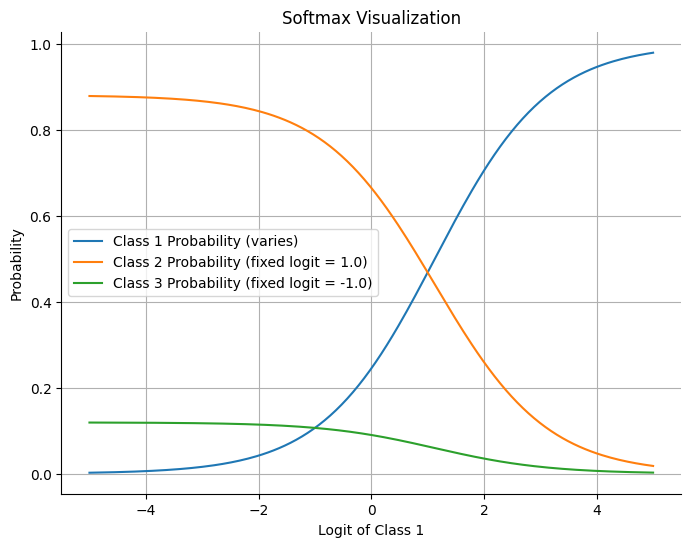
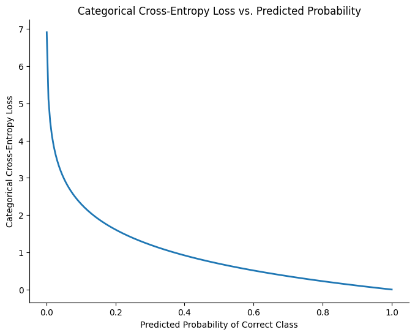
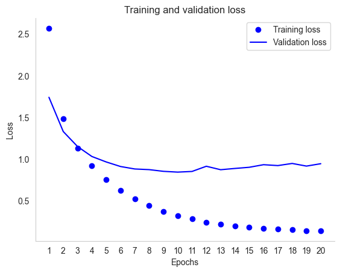
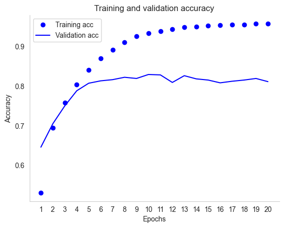

<!DOCTYPE html>


<html lang="en" data-content_root="../" >

  <head>
    <meta charset="utf-8" />
    <meta name="viewport" content="width=device-width, initial-scale=1.0" /><meta name="viewport" content="width=device-width, initial-scale=1" />

    <title>Example: Multiclass Classification Problem &#8212; A Gentle Introduction to Machine Learning</title>
  
  
  
  <script data-cfasync="false">
    document.documentElement.dataset.mode = localStorage.getItem("mode") || "";
    document.documentElement.dataset.theme = localStorage.getItem("theme") || "";
  </script>
  <!--
    this give us a css class that will be invisible only if js is disabled
  -->
  <noscript>
    <style>
      .pst-js-only { display: none !important; }

    </style>
  </noscript>
  
  <!-- Loaded before other Sphinx assets -->
  <link href="../_static/styles/theme.css?digest=8878045cc6db502f8baf" rel="stylesheet" />
<link href="../_static/styles/pydata-sphinx-theme.css?digest=8878045cc6db502f8baf" rel="stylesheet" />

    <link rel="stylesheet" type="text/css" href="../_static/pygments.css?v=fa44fd50" />
    <link rel="stylesheet" type="text/css" href="../_static/styles/sphinx-book-theme.css?v=a3416100" />
    <link rel="stylesheet" type="text/css" href="../_static/togglebutton.css?v=13237357" />
    <link rel="stylesheet" type="text/css" href="../_static/copybutton.css?v=76b2166b" />
    <link rel="stylesheet" type="text/css" href="../_static/mystnb.4510f1fc1dee50b3e5859aac5469c37c29e427902b24a333a5f9fcb2f0b3ac41.css" />
    <link rel="stylesheet" type="text/css" href="../_static/sphinx-thebe.css?v=4fa983c6" />
    <link rel="stylesheet" type="text/css" href="../_static/sphinx-design.min.css?v=95c83b7e" />
  
  <!-- So that users can add custom icons -->
  <script src="../_static/scripts/fontawesome.js?digest=8878045cc6db502f8baf"></script>
  <!-- Pre-loaded scripts that we'll load fully later -->
  <link rel="preload" as="script" href="../_static/scripts/bootstrap.js?digest=8878045cc6db502f8baf" />
<link rel="preload" as="script" href="../_static/scripts/pydata-sphinx-theme.js?digest=8878045cc6db502f8baf" />

    <script src="../_static/documentation_options.js?v=9eb32ce0"></script>
    <script src="../_static/doctools.js?v=9a2dae69"></script>
    <script src="../_static/sphinx_highlight.js?v=dc90522c"></script>
    <script src="../_static/clipboard.min.js?v=a7894cd8"></script>
    <script src="../_static/copybutton.js?v=f281be69"></script>
    <script src="../_static/scripts/sphinx-book-theme.js?v=887ef09a"></script>
    <script>let toggleHintShow = 'Click to show';</script>
    <script>let toggleHintHide = 'Click to hide';</script>
    <script>let toggleOpenOnPrint = 'true';</script>
    <script src="../_static/togglebutton.js?v=4a39c7ea"></script>
    <script>var togglebuttonSelector = '.toggle, .admonition.dropdown';</script>
    <script src="../_static/design-tabs.js?v=f930bc37"></script>
    <script>const THEBE_JS_URL = "https://unpkg.com/thebe@0.8.2/lib/index.js"; const thebe_selector = ".thebe,.cell"; const thebe_selector_input = "pre"; const thebe_selector_output = ".output, .cell_output"</script>
    <script async="async" src="../_static/sphinx-thebe.js?v=c100c467"></script>
    <script>var togglebuttonSelector = '.toggle, .admonition.dropdown';</script>
    <script>const THEBE_JS_URL = "https://unpkg.com/thebe@0.8.2/lib/index.js"; const thebe_selector = ".thebe,.cell"; const thebe_selector_input = "pre"; const thebe_selector_output = ".output, .cell_output"</script>
    <script>window.MathJax = {"options": {"processHtmlClass": "tex2jax_process|mathjax_process|math|output_area"}}</script>
    <script defer="defer" src="https://cdn.jsdelivr.net/npm/mathjax@3/es5/tex-mml-chtml.js"></script>
    <script>DOCUMENTATION_OPTIONS.pagename = 'classification/example-multiclass-classification';</script>
    <link rel="index" title="Index" href="../genindex.html" />
    <link rel="search" title="Search" href="../search.html" />
    <link rel="next" title="Example: Classifying Digits" href="example-classifying-digits.html" />
    <link rel="prev" title="Example: Classifying Movie Reviews" href="example-classifying-reviews.html" />
  <meta name="viewport" content="width=device-width, initial-scale=1"/>
  <meta name="docsearch:language" content="en"/>
  <meta name="docsearch:version" content="" />
  </head>
  
  
  <body data-bs-spy="scroll" data-bs-target=".bd-toc-nav" data-offset="180" data-bs-root-margin="0px 0px -60%" data-default-mode="">

  
  
  <div id="pst-skip-link" class="skip-link d-print-none"><a href="#main-content">Skip to main content</a></div>
  
  <div id="pst-scroll-pixel-helper"></div>
  
  <button type="button" class="btn rounded-pill" id="pst-back-to-top">
    <i class="fa-solid fa-arrow-up"></i>Back to top</button>

  
  <dialog id="pst-search-dialog">
    
<form class="bd-search d-flex align-items-center"
      action="../search.html"
      method="get">
  <i class="fa-solid fa-magnifying-glass"></i>
  <input type="search"
         class="form-control"
         name="q"
         placeholder="Search this book..."
         aria-label="Search this book..."
         autocomplete="off"
         autocorrect="off"
         autocapitalize="off"
         spellcheck="false"/>
  <span class="search-button__kbd-shortcut"><kbd class="kbd-shortcut__modifier">Ctrl</kbd>+<kbd>K</kbd></span>
</form>
  </dialog>

  <div class="pst-async-banner-revealer d-none">
  <aside id="bd-header-version-warning" class="d-none d-print-none" aria-label="Version warning"></aside>
</div>

  
    <header class="bd-header navbar navbar-expand-lg bd-navbar d-print-none">
    </header>
  

  <div class="bd-container">
    <div class="bd-container__inner bd-page-width">
      
      
      
      <dialog id="pst-primary-sidebar-modal"></dialog>
      <div id="pst-primary-sidebar" class="bd-sidebar-primary bd-sidebar">
        

  
  <div class="sidebar-header-items sidebar-primary__section">
    
    
    
    
  </div>
  
    <div class="sidebar-primary-items__start sidebar-primary__section">
        <div class="sidebar-primary-item">

  
    
  

<a class="navbar-brand logo" href="../overview.html">
  
  
  
  
  
  
    <p class="title logo__title">A Gentle Introduction to Machine Learning</p>
  
</a></div>
        <div class="sidebar-primary-item">

<button class="btn search-button-field search-button__button pst-js-only" title="Search" aria-label="Search" data-bs-placement="bottom" data-bs-toggle="tooltip">
 <i class="fa-solid fa-magnifying-glass"></i>
 <span class="search-button__default-text">Search</span>
 <span class="search-button__kbd-shortcut"><kbd class="kbd-shortcut__modifier">Ctrl</kbd>+<kbd class="kbd-shortcut__modifier">K</kbd></span>
</button></div>
        <div class="sidebar-primary-item"><nav class="bd-links bd-docs-nav" aria-label="Main">
    <div class="bd-toc-item navbar-nav active">
        
        <ul class="nav bd-sidenav bd-sidenav__home-link">
            <li class="toctree-l1">
                <a class="reference internal" href="../overview.html">
                    Course Overview
                </a>
            </li>
        </ul>
        <p aria-level="2" class="caption" role="heading"><span class="caption-text">Getting Started</span></p>
<ul class="nav bd-sidenav">
<li class="toctree-l1"><a class="reference internal" href="../getting-started/installation.html">Installation</a></li>
<li class="toctree-l1"><a class="reference internal" href="../getting-started/jupyter.html">Jupyter Notebooks</a></li>
<li class="toctree-l1"><a class="reference internal" href="../getting-started/colab.html">Colab</a></li>
<li class="toctree-l1"><a class="reference internal" href="../getting-started/github.html">GitHub</a></li>
</ul>
<p aria-level="2" class="caption" role="heading"><span class="caption-text">Crash Course in Python</span></p>
<ul class="nav bd-sidenav">
<li class="toctree-l1"><a class="reference internal" href="../crash-course-python/overview.html">Overview</a></li>
<li class="toctree-l1"><a class="reference internal" href="../crash-course-python/python-essentials.html">Python Essentials</a></li>
<li class="toctree-l1"><a class="reference internal" href="../tutorials/tutorial1.html">Tutorial 1: Introduction to Python</a></li>
<li class="toctree-l1"><a class="reference internal" href="../tutorials/tutorial2.html">Tutorial 2: Reading CSV files</a></li>


<li class="toctree-l1"><a class="reference internal" href="../tutorials/tutorial3.html">Tutorial 3: Brief Introduction to Pandas</a></li>
<li class="toctree-l1"><a class="reference internal" href="../crash-course-python/pitfalls.html">Thinking in Python: Key Concepts and Pitfalls</a></li>
<li class="toctree-l1"><a class="reference internal" href="../crash-course-python/classes.html">Classes</a></li>
</ul>
<p aria-level="2" class="caption" role="heading"><span class="caption-text">First Steps in Machine Learning</span></p>
<ul class="nav bd-sidenav">
<li class="toctree-l1"><a class="reference internal" href="../first-steps/intro-numpy.html">A Brief Introduction to Numpy</a></li>

<li class="toctree-l1"><a class="reference internal" href="../tutorials/tutorial4.html">Tutorial 4</a></li>
<li class="toctree-l1"><a class="reference internal" href="../first-steps/linear-classification.html">Introduction to Linear Classification</a></li>
<li class="toctree-l1"><a class="reference internal" href="../first-steps/linear-classification-algorithms.html">Finding a Decision Boundary</a></li>
<li class="toctree-l1"><a class="reference internal" href="../tutorials/tutorial5.html">Tutorial 5: Linear Classifiers</a></li>
<li class="toctree-l1"><a class="reference internal" href="../first-steps/gradient-descent.html">Gradient Descent</a></li>
</ul>
<p aria-level="2" class="caption" role="heading"><span class="caption-text">Classification</span></p>
<ul class="current nav bd-sidenav">
<li class="toctree-l1"><a class="reference internal" href="beyond-linear-classification.html">Beyond Linear Classification</a></li>
<li class="toctree-l1"><a class="reference internal" href="binary-cross-entropy.html">Loss Functions for Binary Classification</a></li>
<li class="toctree-l1"><a class="reference internal" href="example-classifying-reviews.html">Example: Classifying Movie Reviews</a></li>
<li class="toctree-l1 current active"><a class="current reference internal" href="#">Example: Multiclass Classification Problem</a></li>
<li class="toctree-l1"><a class="reference internal" href="example-classifying-digits.html">Example: Classifying Digits</a></li>
<li class="toctree-l1"><a class="reference internal" href="../tutorials/midterm_notebook.html">Midterm Project</a></li>
</ul>
<p aria-level="2" class="caption" role="heading"><span class="caption-text">Regression</span></p>
<ul class="nav bd-sidenav">
<li class="toctree-l1"><a class="reference internal" href="../regression/introduction-regression.html">Regression Problems</a></li>
<li class="toctree-l1"><a class="reference internal" href="../regression/example-predicting-house-prices.html">Example: Predicting House Prices</a></li>
</ul>
<p aria-level="2" class="caption" role="heading"><span class="caption-text">Image Classification</span></p>
<ul class="nav bd-sidenav">
<li class="toctree-l1"><a class="reference internal" href="../image-classification/introduction-convnet.html">Convnets - Convolutional Neural Networks</a></li>
<li class="toctree-l1"><a class="reference internal" href="../image-classification/example-classifying-dogs-vs-cats.html">Example: Classifying Images - Dogs vs. Cats</a></li>
<li class="toctree-l1"><a class="reference internal" href="../image-classification/feature-extraction.html">Using Pretrained Models</a></li>
<li class="toctree-l1"><a class="reference internal" href="../tutorials/tutorial6_release.html">Tutorial 6: CIFAR-10 CNN Assignment</a></li>
</ul>
<p aria-level="2" class="caption" role="heading"><span class="caption-text">Topics in Machine Learning</span></p>
<ul class="nav bd-sidenav">
<li class="toctree-l1"><a class="reference internal" href="../topics-machine-learning/overfitting.html">Overfitting</a></li>
<li class="toctree-l1"><a class="reference internal" href="../topics-machine-learning/gpu-vs-cpu.html">GPU vs. CPU</a></li>
</ul>
<p aria-level="2" class="caption" role="heading"><span class="caption-text">Natural Language Processing</span></p>
<ul class="nav bd-sidenav">
<li class="toctree-l1"><a class="reference internal" href="../text-processing/word-embedding.html">Encoding Text</a></li>
<li class="toctree-l1"><a class="reference internal" href="../text-processing/introduction-rnn.html">Recurrent Neural Networks (RNNs)</a></li>
<li class="toctree-l1"><a class="reference internal" href="../text-processing/intro-processing-text.html">Encoding Text</a></li>
<li class="toctree-l1"><a class="reference internal" href="../text-processing/intro-processing-text-word-embeddings.html">Encoding Text - Using Predefined Word Embeddings</a></li>
<li class="toctree-l1"><a class="reference internal" href="../tutorials/tutorial7_release.html">Tutorial 7: Part-of-speech tagging with RNNs</a></li>


</ul>
<p aria-level="2" class="caption" role="heading"><span class="caption-text">Introduction to Transformers</span></p>
<ul class="nav bd-sidenav">
<li class="toctree-l1"><a class="reference internal" href="../introduciton-transformers/intro-self-attention.html">A First Look at Self-Attention</a></li>
<li class="toctree-l1"><a class="reference internal" href="../introduciton-transformers/mini-gpt.html">Mini GPT</a></li>
</ul>

    </div>
</nav></div>
    </div>
  
  
  <div class="sidebar-primary-items__end sidebar-primary__section">
      <div class="sidebar-primary-item">
<div id="ethical-ad-placement"
      class="flat"
      data-ea-publisher="readthedocs"
      data-ea-type="readthedocs-sidebar"
      data-ea-manual="true">
</div></div>
  </div>


      </div>
      
      <main id="main-content" class="bd-main" role="main">
        
        

<div class="sbt-scroll-pixel-helper"></div>

          <div class="bd-content">
            <div class="bd-article-container">
              
              <div class="bd-header-article d-print-none">
<div class="header-article-items header-article__inner">
  
    <div class="header-article-items__start">
      
        <div class="header-article-item"><button class="sidebar-toggle primary-toggle btn btn-sm" title="Toggle primary sidebar" data-bs-placement="bottom" data-bs-toggle="tooltip">
  <span class="fa-solid fa-bars"></span>
</button></div>
      
    </div>
  
  
    <div class="header-article-items__end">
      
        <div class="header-article-item">

<div class="article-header-buttons">


<div class="dropdown dropdown-source-buttons">
  <button class="btn dropdown-toggle" type="button" data-bs-toggle="dropdown" aria-expanded="false" aria-label="Source repositories">
    <i class="fab fa-github"></i>
  </button>
  <ul class="dropdown-menu">
      
      
      
      <li><a href="https://github.com/epacuit/introduction-machine-learning" target="_blank"
   class="btn btn-sm btn-source-repository-button dropdown-item"
   title="Source repository"
   data-bs-placement="left" data-bs-toggle="tooltip"
>
  

<span class="btn__icon-container">
  <i class="fab fa-github"></i>
  </span>
<span class="btn__text-container">Repository</span>
</a>
</li>
      
      
      
      
      <li><a href="https://github.com/epacuit/introduction-machine-learning/issues/new?title=Issue%20on%20page%20%2Fclassification/example-multiclass-classification.html&body=Your%20issue%20content%20here." target="_blank"
   class="btn btn-sm btn-source-issues-button dropdown-item"
   title="Open an issue"
   data-bs-placement="left" data-bs-toggle="tooltip"
>
  

<span class="btn__icon-container">
  <i class="fas fa-lightbulb"></i>
  </span>
<span class="btn__text-container">Open issue</span>
</a>
</li>
      
  </ul>
</div>


<div class="dropdown dropdown-download-buttons">
  <button class="btn dropdown-toggle" type="button" data-bs-toggle="dropdown" aria-expanded="false" aria-label="Download this page">
    <i class="fas fa-download"></i>
  </button>
  <ul class="dropdown-menu">
      
      
      
      <li><a href="../_sources/classification/example-multiclass-classification.ipynb" target="_blank"
   class="btn btn-sm btn-download-source-button dropdown-item"
   title="Download source file"
   data-bs-placement="left" data-bs-toggle="tooltip"
>
  

<span class="btn__icon-container">
  <i class="fas fa-file"></i>
  </span>
<span class="btn__text-container">.ipynb</span>
</a>
</li>
      
      
      
      
      <li>
<button onclick="window.print()"
  class="btn btn-sm btn-download-pdf-button dropdown-item"
  title="Print to PDF"
  data-bs-placement="left" data-bs-toggle="tooltip"
>
  

<span class="btn__icon-container">
  <i class="fas fa-file-pdf"></i>
  </span>
<span class="btn__text-container">.pdf</span>
</button>
</li>
      
  </ul>
</div>


<button onclick="toggleFullScreen()"
  class="btn btn-sm btn-fullscreen-button"
  title="Fullscreen mode"
  data-bs-placement="bottom" data-bs-toggle="tooltip"
>
  

<span class="btn__icon-container">
  <i class="fas fa-expand"></i>
  </span>

</button>


<button class="btn btn-sm nav-link pst-navbar-icon theme-switch-button pst-js-only" aria-label="Color mode" data-bs-title="Color mode"  data-bs-placement="bottom" data-bs-toggle="tooltip">
  <i class="theme-switch fa-solid fa-sun                fa-lg" data-mode="light" title="Light"></i>
  <i class="theme-switch fa-solid fa-moon               fa-lg" data-mode="dark"  title="Dark"></i>
  <i class="theme-switch fa-solid fa-circle-half-stroke fa-lg" data-mode="auto"  title="System Settings"></i>
</button>


<button class="btn btn-sm pst-navbar-icon search-button search-button__button pst-js-only" title="Search" aria-label="Search" data-bs-placement="bottom" data-bs-toggle="tooltip">
    <i class="fa-solid fa-magnifying-glass fa-lg"></i>
</button>
<button class="sidebar-toggle secondary-toggle btn btn-sm" title="Toggle secondary sidebar" data-bs-placement="bottom" data-bs-toggle="tooltip">
    <span class="fa-solid fa-list"></span>
</button>
</div></div>
      
    </div>
  
</div>
</div>
              
              

<div id="jb-print-docs-body" class="onlyprint">
    <h1>Example: Multiclass Classification Problem</h1>
    <!-- Table of contents -->
    <div id="print-main-content">
        <div id="jb-print-toc">
            
            <div>
                <h2> Contents </h2>
            </div>
            <nav aria-label="Page">
                <ul class="visible nav section-nav flex-column">
<li class="toc-h2 nav-item toc-entry"><a class="reference internal nav-link" href="#step-1-load-the-data">Step 1: Load the data</a></li>
<li class="toc-h2 nav-item toc-entry"><a class="reference internal nav-link" href="#step-2-preprocess-the-data">Step 2: Preprocess the data</a></li>
<li class="toc-h2 nav-item toc-entry"><a class="reference internal nav-link" href="#step-3-build-the-model">Step 3: Build the model</a><ul class="nav section-nav flex-column">
<li class="toc-h3 nav-item toc-entry"><a class="reference internal nav-link" href="#softmax">Softmax</a></li>
<li class="toc-h3 nav-item toc-entry"><a class="reference internal nav-link" href="#categorical-crossentropy">Categorical Crossentropy</a></li>
<li class="toc-h3 nav-item toc-entry"><a class="reference internal nav-link" href="#defining-the-model">Defining the Model</a></li>
</ul>
</li>
<li class="toc-h2 nav-item toc-entry"><a class="reference internal nav-link" href="#step-4-train-the-model">Step 4: Train the model</a><ul class="nav section-nav flex-column">
<li class="toc-h3 nav-item toc-entry"><a class="reference internal nav-link" href="#prediction">Prediction</a></li>
</ul>
</li>
</ul>
            </nav>
        </div>
    </div>
</div>

              
                
<div id="searchbox"></div>
                <article class="bd-article">
                  
  <p><a target="_blank" rel="noopener noreferrer" href="https://colab.research.google.com/github/epacuit/introduction-machine-learning/blob/main/classification/example-multiclass-classification.ipynb"></a></p>
<section class="tex2jax_ignore mathjax_ignore" id="example-multiclass-classification-problem">
<span id="multiclass-classification"></span><h1>Example: Multiclass Classification Problem<a class="headerlink" href="#example-multiclass-classification-problem" title="Link to this heading">#</a></h1>
<p>This example is taken from Section 4.2 of the book “Deep Learning with Python” by François Chollet.</p>
<p>The Reuters dataset is a set of short newswires and their topics, published by Reuters in 1986. It’s a simple, widely used toy dataset for text classification. There are 46 different topics; some topics are more represented than others, but each topic has at least 10 examples in the training set.</p>
<p>Like IMDB and MNIST, the Reuters dataset comes packaged as part of Keras.</p>
<section id="step-1-load-the-data">
<h2>Step 1: Load the data<a class="headerlink" href="#step-1-load-the-data" title="Link to this heading">#</a></h2>
<div class="cell docutils container">
<div class="cell_input docutils container">
<div class="highlight-ipython3 notranslate"><div class="highlight"><pre><span></span><span class="kn">from</span> <span class="nn">tensorflow.keras.datasets</span> <span class="kn">import</span> <span class="n">reuters</span> 

<span class="p">(</span><span class="n">train_data</span><span class="p">,</span> <span class="n">train_labels</span><span class="p">),</span> <span class="p">(</span><span class="n">test_data</span><span class="p">,</span> <span class="n">test_labels</span><span class="p">)</span> <span class="o">=</span> <span class="n">reuters</span><span class="o">.</span><span class="n">load_data</span><span class="p">(</span> <span class="n">num_words</span><span class="o">=</span><span class="mi">10000</span><span class="p">)</span>
</pre></div>
</div>
</div>
</div>
<p><code class="docutils literal notranslate"><span class="pre">train_data</span></code> and <code class="docutils literal notranslate"><span class="pre">test_data</span></code>: lists of news stories, each story being a list of word indices (encoding a sequence of words).</p>
<p><code class="docutils literal notranslate"><span class="pre">train_labels</span></code> and <code class="docutils literal notranslate"><span class="pre">test_labels</span></code>: The label associated with an example is an integer between 0 and 45—a topic index.</p>
<div class="cell docutils container">
<div class="cell_input docutils container">
<div class="highlight-ipython3 notranslate"><div class="highlight"><pre><span></span><span class="n">story_idx</span> <span class="o">=</span> <span class="mi">100</span>
<span class="nb">print</span><span class="p">(</span><span class="n">train_data</span><span class="p">[</span><span class="n">story_idx</span><span class="p">])</span>
<span class="nb">print</span><span class="p">(</span><span class="n">train_labels</span><span class="p">[</span><span class="n">story_idx</span><span class="p">])</span>
</pre></div>
</div>
</div>
<div class="cell_output docutils container">
<div class="output stream highlight-myst-ansi notranslate"><div class="highlight"><pre><span></span>[1, 367, 1394, 169, 65, 87, 209, 30, 306, 228, 10, 803, 305, 96, 5, 196, 15, 10, 523, 2, 3006, 293, 484, 2, 1440, 5825, 8, 145, 7, 10, 1670, 6, 10, 294, 517, 237, 2, 367, 8042, 7, 2477, 1177, 483, 1440, 5825, 8, 367, 1394, 4, 169, 387, 66, 209, 30, 2344, 652, 1496, 9, 209, 30, 2564, 228, 10, 803, 305, 96, 5, 196, 15, 51, 36, 1457, 24, 1345, 5, 4, 196, 150, 10, 523, 320, 64, 992, 6373, 13, 367, 190, 297, 64, 85, 1692, 6, 8656, 122, 9, 36, 1457, 24, 269, 4753, 27, 367, 212, 114, 45, 30, 3292, 7, 126, 2203, 13, 367, 6, 1818, 4, 169, 65, 96, 28, 432, 23, 189, 1254, 4, 9725, 320, 5, 196, 15, 10, 523, 25, 730, 190, 57, 64, 6, 9953, 2016, 6373, 7, 2, 122, 1440, 5825, 8, 269, 4753, 1217, 7, 608, 2203, 30, 3292, 1440, 5825, 8, 43, 339, 43, 231, 9, 667, 1820, 126, 212, 4197, 21, 1709, 249, 311, 13, 260, 489, 9, 65, 4753, 64, 1209, 4397, 249, 954, 36, 152, 1440, 5825, 506, 24, 135, 367, 311, 34, 420, 4, 8407, 200, 1519, 13, 137, 730, 190, 7, 104, 570, 52, 64, 2492, 7725, 4, 642, 5, 405, 7725, 2492, 24, 76, 847, 1435, 4446, 6, 10, 548, 320, 34, 325, 136, 694, 1440, 5825, 8, 10, 5184, 847, 7, 4, 169, 76, 2378, 10, 4933, 3447, 5, 141, 1082, 36, 152, 36, 8, 126, 358, 367, 65, 814, 190, 64, 2575, 10, 969, 3161, 92, 48, 6, 2245, 31, 367, 51, 570, 4753, 292, 27, 405, 212, 62, 3740, 922, 9, 2464, 27, 367, 77, 62, 4397, 7, 316, 5, 874, 36, 152, 4, 936, 1243, 5, 358, 367, 398, 57, 45, 3680, 7367, 6, 2394, 1343, 13, 373, 4504, 36, 8, 1440, 5825, 8, 42, 196, 150, 10, 523, 96, 34, 9725, 43, 16, 1261, 205, 7, 4, 65, 182, 1351, 367, 6, 351, 184, 45, 6081, 2286, 197, 1245, 13, 3187, 2, 274, 419, 714, 1351, 367, 269, 10, 96, 41, 129, 1104, 1673, 1419, 578, 36, 152, 2, 1440, 7615, 367, 1683, 484, 293, 75, 6557, 4, 8042, 152, 24, 5222, 34, 325, 834, 6, 1356, 2, 2406, 7, 4, 65, 76, 1082, 164, 1574, 212, 9, 861, 34, 8340, 13, 286, 1930, 1440, 7615, 8, 787, 36, 1830, 1082, 41, 3751, 616, 6, 382, 2, 2, 1574, 6928, 17, 12]
20
</pre></div>
</div>
</div>
</div>
<p>The <code class="docutils literal notranslate"><span class="pre">reuters</span></code> object has a method <code class="docutils literal notranslate"><span class="pre">get_word_index</span></code> that returns a dictionary mapping words to an integer index.</p>
<div class="cell docutils container">
<div class="cell_input docutils container">
<div class="highlight-ipython3 notranslate"><div class="highlight"><pre><span></span><span class="n">news_idx</span> <span class="o">=</span> <span class="mi">0</span>

<span class="n">word_index</span> <span class="o">=</span> <span class="n">reuters</span><span class="o">.</span><span class="n">get_word_index</span><span class="p">()</span> 

<span class="n">reverse_word_index</span> <span class="o">=</span> <span class="nb">dict</span><span class="p">([(</span><span class="n">value</span><span class="p">,</span> <span class="n">key</span><span class="p">)</span> <span class="k">for</span> <span class="p">(</span><span class="n">key</span><span class="p">,</span> <span class="n">value</span><span class="p">)</span> <span class="ow">in</span> <span class="n">word_index</span><span class="o">.</span><span class="n">items</span><span class="p">()])</span>

<span class="n">decoded_newswire</span> <span class="o">=</span> <span class="s2">&quot; &quot;</span><span class="o">.</span><span class="n">join</span><span class="p">([</span><span class="n">reverse_word_index</span><span class="o">.</span><span class="n">get</span><span class="p">(</span><span class="n">i</span> <span class="o">-</span> <span class="mi">3</span><span class="p">,</span> <span class="s2">&quot;?&quot;</span><span class="p">)</span> <span class="k">for</span> <span class="n">i</span> <span class="ow">in</span> <span class="n">train_data</span><span class="p">[</span><span class="n">news_idx</span><span class="p">]])</span>

<span class="nb">print</span><span class="p">(</span><span class="n">decoded_newswire</span><span class="p">)</span>
</pre></div>
</div>
</div>
<div class="cell_output docutils container">
<div class="output stream highlight-myst-ansi notranslate"><div class="highlight"><pre><span></span>? ? ? said as a result of its december acquisition of space co it expects earnings per share in 1987 of 1 15 to 1 30 dlrs per share up from 70 cts in 1986 the company said pretax net should rise to nine to 10 mln dlrs from six mln dlrs in 1986 and rental operation revenues to 19 to 22 mln dlrs from 12 5 mln dlrs it said cash flow per share this year should be 2 50 to three dlrs reuter 3
</pre></div>
</div>
</div>
</div>
<div class="cell docutils container">
<div class="cell_input docutils container">
<div class="highlight-ipython3 notranslate"><div class="highlight"><pre><span></span><span class="c1"># the words indices range from 1 to 9999</span>
<span class="nb">print</span><span class="p">(</span><span class="nb">min</span><span class="p">(</span><span class="nb">min</span><span class="p">(</span><span class="n">seq</span><span class="p">)</span> <span class="k">for</span> <span class="n">seq</span> <span class="ow">in</span> <span class="n">train_data</span><span class="p">))</span>
<span class="nb">print</span><span class="p">(</span><span class="nb">max</span><span class="p">(</span><span class="nb">max</span><span class="p">(</span><span class="n">seq</span><span class="p">)</span> <span class="k">for</span> <span class="n">seq</span> <span class="ow">in</span> <span class="n">train_data</span><span class="p">))</span>

<span class="nb">print</span><span class="p">(</span><span class="n">reverse_word_index</span><span class="p">[</span><span class="mi">1</span><span class="p">])</span>
<span class="nb">print</span><span class="p">(</span><span class="n">word_index</span><span class="p">[</span><span class="s2">&quot;the&quot;</span><span class="p">])</span>
</pre></div>
</div>
</div>
<div class="cell_output docutils container">
<div class="output stream highlight-myst-ansi notranslate"><div class="highlight"><pre><span></span>1
9999
the
1
</pre></div>
</div>
</div>
</div>
</section>
<section id="step-2-preprocess-the-data">
<h2>Step 2: Preprocess the data<a class="headerlink" href="#step-2-preprocess-the-data" title="Link to this heading">#</a></h2>
<p>In this step, we will convert the lists of integers into tensors that our neural network can process.</p>
<p>We will implement <strong>multi-hot-encoding</strong> - a binary representation commonly used in NLP - to transform our lists into vectors of 0s and 1s. Each resulting tensor will be a 10,000-element vector where:</p>
<ul class="simple">
<li><p>1 indicates the word appears in the review</p></li>
<li><p>0 indicates the word is absent</p></li>
</ul>
<p>This representation creates a standardized format that our model can efficiently process while preserving the essential information about word presence in each review.</p>
<div class="cell docutils container">
<div class="cell_input docutils container">
<div class="highlight-ipython3 notranslate"><div class="highlight"><pre><span></span><span class="kn">import</span> <span class="nn">numpy</span> <span class="k">as</span> <span class="nn">np</span>

<span class="k">def</span> <span class="nf">vectorize_sequences</span><span class="p">(</span><span class="n">sequences</span><span class="p">,</span> <span class="n">dimension</span><span class="o">=</span><span class="mi">10000</span><span class="p">):</span>
    <span class="n">results</span> <span class="o">=</span> <span class="n">np</span><span class="o">.</span><span class="n">zeros</span><span class="p">((</span><span class="nb">len</span><span class="p">(</span><span class="n">sequences</span><span class="p">),</span> <span class="n">dimension</span><span class="p">))</span> 
    <span class="k">for</span> <span class="n">i</span><span class="p">,</span> <span class="n">sequence</span> <span class="ow">in</span> <span class="nb">enumerate</span><span class="p">(</span><span class="n">sequences</span><span class="p">):</span>
        <span class="k">for</span> <span class="n">j</span> <span class="ow">in</span> <span class="n">sequence</span><span class="p">:</span>  
            <span class="n">results</span><span class="p">[</span><span class="n">i</span><span class="p">,</span> <span class="n">j</span><span class="p">]</span> <span class="o">=</span> <span class="mf">1.</span>
    <span class="k">return</span> <span class="n">results</span> 

<span class="n">x_train</span> <span class="o">=</span> <span class="n">vectorize_sequences</span><span class="p">(</span><span class="n">train_data</span><span class="p">)</span> 
<span class="n">x_test</span> <span class="o">=</span> <span class="n">vectorize_sequences</span><span class="p">(</span><span class="n">test_data</span><span class="p">)</span>
</pre></div>
</div>
</div>
</div>
<div class="cell docutils container">
<div class="cell_input docutils container">
<div class="highlight-ipython3 notranslate"><div class="highlight"><pre><span></span><span class="c1"># check that the vectorized data is correct</span>
<span class="k">for</span> <span class="n">i</span> <span class="ow">in</span> <span class="n">train_data</span><span class="p">[</span><span class="mi">0</span><span class="p">]:</span> 
    <span class="k">if</span> <span class="n">x_train</span><span class="p">[</span><span class="mi">0</span><span class="p">,</span> <span class="n">i</span><span class="p">]</span> <span class="o">!=</span> <span class="mf">1.0</span><span class="p">:</span> 
        <span class="nb">print</span><span class="p">(</span><span class="sa">f</span><span class="s2">&quot;i=</span><span class="si">{</span><span class="n">i</span><span class="si">}</span><span class="s2"> x_train[0, </span><span class="si">{</span><span class="n">i</span><span class="si">}</span><span class="s2">]=</span><span class="si">{</span><span class="n">x_train</span><span class="p">[</span><span class="mi">0</span><span class="p">,</span><span class="w"> </span><span class="n">i</span><span class="p">]</span><span class="si">}</span><span class="s2">&quot;</span><span class="p">)</span>

<span class="c1"># test your understanding: why are these values not the same? </span>
<span class="nb">print</span><span class="p">(</span><span class="nb">sum</span><span class="p">(</span><span class="n">x_train</span><span class="p">[</span><span class="mi">0</span><span class="p">]))</span>
<span class="nb">print</span><span class="p">(</span><span class="nb">len</span><span class="p">(</span><span class="n">train_data</span><span class="p">[</span><span class="mi">0</span><span class="p">]))</span>
</pre></div>
</div>
</div>
<div class="cell_output docutils container">
<div class="output stream highlight-myst-ansi notranslate"><div class="highlight"><pre><span></span>57.0
87
</pre></div>
</div>
</div>
</div>
<div class="cell docutils container">
<div class="cell_input docutils container">
<div class="highlight-ipython3 notranslate"><div class="highlight"><pre><span></span><span class="nb">print</span><span class="p">(</span><span class="n">train_labels</span><span class="p">)</span>
</pre></div>
</div>
</div>
<div class="cell_output docutils container">
<div class="output stream highlight-myst-ansi notranslate"><div class="highlight"><pre><span></span>[ 3  4  3 ... 25  3 25]
</pre></div>
</div>
</div>
</div>
<div class="cell docutils container">
<div class="cell_input docutils container">
<div class="highlight-ipython3 notranslate"><div class="highlight"><pre><span></span><span class="k">def</span> <span class="nf">to_one_hot</span><span class="p">(</span><span class="n">labels</span><span class="p">,</span> <span class="n">dimension</span><span class="o">=</span><span class="mi">46</span><span class="p">):</span>
    <span class="n">results</span> <span class="o">=</span> <span class="n">np</span><span class="o">.</span><span class="n">zeros</span><span class="p">((</span><span class="nb">len</span><span class="p">(</span><span class="n">labels</span><span class="p">),</span> <span class="n">dimension</span><span class="p">))</span>

    <span class="k">for</span> <span class="n">i</span><span class="p">,</span> <span class="n">label</span> <span class="ow">in</span> <span class="nb">enumerate</span><span class="p">(</span><span class="n">labels</span><span class="p">):</span> 
        <span class="n">results</span><span class="p">[</span><span class="n">i</span><span class="p">,</span> <span class="n">label</span><span class="p">]</span> <span class="o">=</span> <span class="mf">1.</span>
        
    <span class="k">return</span> <span class="n">results</span> 
    
<span class="n">y_train</span> <span class="o">=</span> <span class="n">to_one_hot</span><span class="p">(</span><span class="n">train_labels</span><span class="p">)</span> 
<span class="n">y_test</span> <span class="o">=</span> <span class="n">to_one_hot</span><span class="p">(</span><span class="n">test_labels</span><span class="p">)</span>
</pre></div>
</div>
</div>
</div>
<div class="cell docutils container">
<div class="cell_input docutils container">
<div class="highlight-ipython3 notranslate"><div class="highlight"><pre><span></span><span class="nb">print</span><span class="p">(</span><span class="n">y_train</span><span class="p">[</span><span class="mi">100</span><span class="p">])</span>

<span class="nb">print</span><span class="p">(</span><span class="n">train_labels</span><span class="p">[</span><span class="mi">100</span><span class="p">])</span>
</pre></div>
</div>
</div>
<div class="cell_output docutils container">
<div class="output stream highlight-myst-ansi notranslate"><div class="highlight"><pre><span></span>[0. 0. 0. 0. 0. 0. 0. 0. 0. 0. 0. 0. 0. 0. 0. 0. 0. 0. 0. 0. 1. 0. 0. 0.
 0. 0. 0. 0. 0. 0. 0. 0. 0. 0. 0. 0. 0. 0. 0. 0. 0. 0. 0. 0. 0. 0.]
20
</pre></div>
</div>
</div>
</div>
<div class="cell docutils container">
<div class="cell_input docutils container">
<div class="highlight-ipython3 notranslate"><div class="highlight"><pre><span></span><span class="c1"># Note that there is a built-in way to do this in Keras:</span>

<span class="kn">from</span> <span class="nn">tensorflow.keras.utils</span> <span class="kn">import</span> <span class="n">to_categorical</span> 

<span class="n">y_train</span> <span class="o">=</span> <span class="n">to_categorical</span><span class="p">(</span><span class="n">train_labels</span><span class="p">)</span> 
<span class="n">y_test</span> <span class="o">=</span> <span class="n">to_categorical</span><span class="p">(</span><span class="n">test_labels</span><span class="p">)</span>
</pre></div>
</div>
</div>
</div>
<div class="cell docutils container">
<div class="cell_input docutils container">
<div class="highlight-ipython3 notranslate"><div class="highlight"><pre><span></span><span class="nb">print</span><span class="p">(</span><span class="n">y_train</span><span class="p">[</span><span class="mi">100</span><span class="p">])</span>

<span class="nb">print</span><span class="p">(</span><span class="n">train_labels</span><span class="p">[</span><span class="mi">100</span><span class="p">])</span>
</pre></div>
</div>
</div>
<div class="cell_output docutils container">
<div class="output stream highlight-myst-ansi notranslate"><div class="highlight"><pre><span></span>[0. 0. 0. 0. 0. 0. 0. 0. 0. 0. 0. 0. 0. 0. 0. 0. 0. 0. 0. 0. 1. 0. 0. 0.
 0. 0. 0. 0. 0. 0. 0. 0. 0. 0. 0. 0. 0. 0. 0. 0. 0. 0. 0. 0. 0. 0.]
20
</pre></div>
</div>
</div>
</div>
</section>
<section id="step-3-build-the-model">
<h2>Step 3: Build the model<a class="headerlink" href="#step-3-build-the-model" title="Link to this heading">#</a></h2>
<section id="softmax">
<h3>Softmax<a class="headerlink" href="#softmax" title="Link to this heading">#</a></h3>
<p>Given a vector of raw predictions (logits) <span class="math notranslate nohighlight">\(z = (z_1, z_2, \dots, z_n)\)</span>, the softmax function <span class="math notranslate nohighlight">\(\sigma(z)\)</span> is defined as:</p>
<div class="math notranslate nohighlight">
\[
\sigma(z)_i = \frac{e^{z_i}}{\sum_{j=1}^{n} e^{z_j}}
\]</div>
<p>where:</p>
<ul class="simple">
<li><p><span class="math notranslate nohighlight">\(\sigma(z)_i\)</span> is the predicted probability for the <span class="math notranslate nohighlight">\(i^{\text{th}}\)</span> class.</p></li>
<li><p>The probabilities satisfy <span class="math notranslate nohighlight">\(\sum_{i=1}^{n} \sigma(z)_i = 1\)</span>.</p></li>
</ul>
<div class="cell docutils container">
<div class="cell_input docutils container">
<div class="highlight-ipython3 notranslate"><div class="highlight"><pre><span></span><span class="kn">import</span> <span class="nn">numpy</span> <span class="k">as</span> <span class="nn">np</span>

<span class="k">def</span> <span class="nf">softmax</span><span class="p">(</span><span class="n">z</span><span class="p">):</span>
    <span class="n">exp_z</span> <span class="o">=</span> <span class="n">np</span><span class="o">.</span><span class="n">exp</span><span class="p">(</span><span class="n">z</span><span class="p">)</span>   
    <span class="k">return</span> <span class="n">exp_z</span> <span class="o">/</span> <span class="n">np</span><span class="o">.</span><span class="n">sum</span><span class="p">(</span><span class="n">exp_z</span><span class="p">)</span>

<span class="c1"># Example usage:</span>
<span class="n">logits</span> <span class="o">=</span> <span class="n">np</span><span class="o">.</span><span class="n">array</span><span class="p">([</span><span class="o">-</span><span class="mf">20.0</span><span class="p">,</span> <span class="o">-</span><span class="mf">1.0</span><span class="p">,</span> <span class="o">-</span><span class="mf">1.1</span><span class="p">])</span>
<span class="n">probabilities</span> <span class="o">=</span> <span class="n">softmax</span><span class="p">(</span><span class="n">logits</span><span class="p">)</span>
<span class="nb">print</span><span class="p">(</span><span class="n">probabilities</span><span class="p">)</span>   
<span class="nb">print</span><span class="p">(</span><span class="n">np</span><span class="o">.</span><span class="n">sum</span><span class="p">(</span><span class="n">probabilities</span><span class="p">))</span>  <span class="c1"># the sum of the probabilities should be 1</span>
</pre></div>
</div>
</div>
<div class="cell_output docutils container">
<div class="output stream highlight-myst-ansi notranslate"><div class="highlight"><pre><span></span>[2.94135151e-09 5.24979186e-01 4.75020811e-01]
1.0
</pre></div>
</div>
</div>
</div>
<div class="cell docutils container">
<div class="cell_input docutils container">
<div class="highlight-ipython3 notranslate"><div class="highlight"><pre><span></span><span class="kn">import</span> <span class="nn">matplotlib.pyplot</span> <span class="k">as</span> <span class="nn">plt</span>
<span class="kn">import</span> <span class="nn">seaborn</span> <span class="k">as</span> <span class="nn">sns</span>

<span class="c1"># Varying the logit of class 1, fix logits for class 2 and class 3 at distinct values</span>
<span class="n">logits_class1</span> <span class="o">=</span> <span class="n">np</span><span class="o">.</span><span class="n">linspace</span><span class="p">(</span><span class="o">-</span><span class="mi">5</span><span class="p">,</span> <span class="mi">5</span><span class="p">,</span> <span class="mi">200</span><span class="p">)</span>
<span class="n">fixed_logit_class2</span> <span class="o">=</span> <span class="mf">1.0</span>  
<span class="n">fixed_logit_class3</span> <span class="o">=</span> <span class="o">-</span><span class="mf">1.0</span> 

<span class="n">probabilities</span> <span class="o">=</span> <span class="n">np</span><span class="o">.</span><span class="n">array</span><span class="p">([</span>
    <span class="n">softmax</span><span class="p">([</span><span class="n">z</span><span class="p">,</span> <span class="n">fixed_logit_class2</span><span class="p">,</span> <span class="n">fixed_logit_class3</span><span class="p">])</span> 
    <span class="k">for</span> <span class="n">z</span> <span class="ow">in</span> <span class="n">logits_class1</span>
<span class="p">])</span>

<span class="n">plt</span><span class="o">.</span><span class="n">figure</span><span class="p">(</span><span class="n">figsize</span><span class="o">=</span><span class="p">(</span><span class="mi">8</span><span class="p">,</span> <span class="mi">6</span><span class="p">))</span>
<span class="n">plt</span><span class="o">.</span><span class="n">plot</span><span class="p">(</span><span class="n">logits_class1</span><span class="p">,</span> <span class="n">probabilities</span><span class="p">[:,</span> <span class="mi">0</span><span class="p">],</span> <span class="n">label</span><span class="o">=</span><span class="s1">&#39;Class 1 Probability (varies)&#39;</span><span class="p">)</span>
<span class="n">plt</span><span class="o">.</span><span class="n">plot</span><span class="p">(</span><span class="n">logits_class1</span><span class="p">,</span> <span class="n">probabilities</span><span class="p">[:,</span> <span class="mi">1</span><span class="p">],</span> <span class="n">label</span><span class="o">=</span><span class="sa">f</span><span class="s1">&#39;Class 2 Probability (fixed logit = </span><span class="si">{</span><span class="n">fixed_logit_class2</span><span class="si">}</span><span class="s1">)&#39;</span><span class="p">)</span>
<span class="n">plt</span><span class="o">.</span><span class="n">plot</span><span class="p">(</span><span class="n">logits_class1</span><span class="p">,</span> <span class="n">probabilities</span><span class="p">[:,</span> <span class="mi">2</span><span class="p">],</span> <span class="n">label</span><span class="o">=</span><span class="sa">f</span><span class="s1">&#39;Class 3 Probability (fixed logit = </span><span class="si">{</span><span class="n">fixed_logit_class3</span><span class="si">}</span><span class="s1">)&#39;</span><span class="p">)</span>

<span class="n">plt</span><span class="o">.</span><span class="n">xlabel</span><span class="p">(</span><span class="s2">&quot;Logit of Class 1&quot;</span><span class="p">)</span>
<span class="n">plt</span><span class="o">.</span><span class="n">ylabel</span><span class="p">(</span><span class="s2">&quot;Probability&quot;</span><span class="p">)</span>
<span class="n">plt</span><span class="o">.</span><span class="n">title</span><span class="p">(</span><span class="s2">&quot;Softmax Visualization&quot;</span><span class="p">)</span>
<span class="n">plt</span><span class="o">.</span><span class="n">grid</span><span class="p">(</span><span class="kc">True</span><span class="p">)</span>
<span class="n">sns</span><span class="o">.</span><span class="n">despine</span><span class="p">()</span>
<span class="n">plt</span><span class="o">.</span><span class="n">legend</span><span class="p">()</span>
<span class="n">plt</span><span class="o">.</span><span class="n">show</span><span class="p">()</span>
</pre></div>
</div>
</div>
<div class="cell_output docutils container">

</div>
</div>
</section>
<section id="categorical-crossentropy">
<h3>Categorical Crossentropy<a class="headerlink" href="#categorical-crossentropy" title="Link to this heading">#</a></h3>
<p>Categorical cross-entropy is a loss function commonly used to train neural networks for multi-class classification problems, where each instance belongs to exactly one category.</p>
<p>Intuition: It measures how far away your model’s predicted probabilities are from the true labels. A smaller loss means your model’s predictions are close to the true labels, while a larger loss means predictions are far away.</p>
<p>Given:</p>
<ul class="simple">
<li><p>True labels: <span class="math notranslate nohighlight">\(y = (y_1, y_2, \dots, y_n)\)</span>, represented as a one-hot vector, where exactly one element is <span class="math notranslate nohighlight">\(1\)</span> (the true class), and all others are <span class="math notranslate nohighlight">\(0\)</span>.</p></li>
<li><p>Predicted probabilities: <span class="math notranslate nohighlight">\(\hat{y} = (\hat{y}_1, \hat{y}_2, \dots, \hat{y}_n)\)</span>, output by the softmax function.</p></li>
</ul>
<p>The categorical cross-entropy loss is:</p>
<div class="math notranslate nohighlight">
\[
\text{Loss} = -\sum_{i=1}^{n} y_i \log(\hat{y}_i)
\]</div>
<p>Since only the true class label <span class="math notranslate nohighlight">\(y_i = 1\)</span> contributes, this simplifies to:</p>
<div class="math notranslate nohighlight">
\[
\text{Loss} = -\log(\hat{y}_{\text{true class}})
\]</div>
<div class="cell docutils container">
<div class="cell_input docutils container">
<div class="highlight-ipython3 notranslate"><div class="highlight"><pre><span></span><span class="kn">import</span> <span class="nn">numpy</span> <span class="k">as</span> <span class="nn">np</span>

<span class="k">def</span> <span class="nf">categorical_crossentropy</span><span class="p">(</span><span class="n">y_true</span><span class="p">,</span> <span class="n">y_pred</span><span class="p">):</span>
    <span class="c1"># Ensure numerical stability by adding a tiny epsilon</span>
    <span class="n">epsilon</span> <span class="o">=</span> <span class="mf">1e-15</span>
    <span class="n">y_pred</span> <span class="o">=</span> <span class="n">np</span><span class="o">.</span><span class="n">clip</span><span class="p">(</span><span class="n">y_pred</span><span class="p">,</span> <span class="n">epsilon</span><span class="p">,</span> <span class="mi">1</span> <span class="o">-</span> <span class="n">epsilon</span><span class="p">)</span>
    <span class="k">return</span> <span class="o">-</span><span class="n">np</span><span class="o">.</span><span class="n">sum</span><span class="p">(</span><span class="n">y_true</span> <span class="o">*</span> <span class="n">np</span><span class="o">.</span><span class="n">log</span><span class="p">(</span><span class="n">y_pred</span><span class="p">))</span>

<span class="c1"># Example usage:</span>
<span class="n">y_true</span> <span class="o">=</span> <span class="n">np</span><span class="o">.</span><span class="n">array</span><span class="p">([</span><span class="mi">0</span><span class="p">,</span> <span class="mf">0.5</span><span class="p">,</span> <span class="mf">0.5</span><span class="p">])</span>   
<span class="n">y_pred</span> <span class="o">=</span> <span class="n">np</span><span class="o">.</span><span class="n">array</span><span class="p">([</span><span class="mf">0.0</span><span class="p">,</span> <span class="mf">1.0</span><span class="p">,</span> <span class="mf">0.0</span><span class="p">])</span>  
<span class="n">loss</span> <span class="o">=</span> <span class="n">categorical_crossentropy</span><span class="p">(</span><span class="n">y_true</span><span class="p">,</span> <span class="n">y_pred</span><span class="p">)</span>
<span class="nb">print</span><span class="p">(</span><span class="n">loss</span><span class="p">)</span>   
</pre></div>
</div>
</div>
<div class="cell_output docutils container">
<div class="output stream highlight-myst-ansi notranslate"><div class="highlight"><pre><span></span>17.269388197455342
</pre></div>
</div>
</div>
</div>
<div class="cell docutils container">
<div class="cell_input docutils container">
<div class="highlight-ipython3 notranslate"><div class="highlight"><pre><span></span><span class="n">prob_correct</span> <span class="o">=</span> <span class="n">np</span><span class="o">.</span><span class="n">linspace</span><span class="p">(</span><span class="mf">0.001</span><span class="p">,</span> <span class="mf">1.0</span><span class="p">,</span> <span class="mi">200</span><span class="p">)</span>

<span class="n">loss_values</span> <span class="o">=</span> <span class="p">[]</span>
<span class="k">for</span> <span class="n">p</span> <span class="ow">in</span> <span class="n">prob_correct</span><span class="p">:</span>
    <span class="n">y_true</span> <span class="o">=</span> <span class="n">np</span><span class="o">.</span><span class="n">array</span><span class="p">([</span><span class="mi">1</span><span class="p">,</span> <span class="mi">0</span><span class="p">,</span> <span class="mi">0</span><span class="p">])</span>            <span class="c1"># True class is class 1</span>
    <span class="n">y_pred</span> <span class="o">=</span> <span class="n">np</span><span class="o">.</span><span class="n">array</span><span class="p">([</span><span class="n">p</span><span class="p">,</span> <span class="p">(</span><span class="mi">1</span> <span class="o">-</span> <span class="n">p</span><span class="p">)</span><span class="o">/</span><span class="mi">2</span><span class="p">,</span> <span class="p">(</span><span class="mi">1</span> <span class="o">-</span> <span class="n">p</span><span class="p">)</span><span class="o">/</span><span class="mi">2</span><span class="p">])</span>  <span class="c1"># Remaining probability split evenly</span>
    <span class="n">loss</span> <span class="o">=</span> <span class="n">categorical_crossentropy</span><span class="p">(</span><span class="n">y_true</span><span class="p">,</span> <span class="n">y_pred</span><span class="p">)</span>
    <span class="n">loss_values</span><span class="o">.</span><span class="n">append</span><span class="p">(</span><span class="n">loss</span><span class="p">)</span>

<span class="c1"># Plot</span>
<span class="n">plt</span><span class="o">.</span><span class="n">figure</span><span class="p">(</span><span class="n">figsize</span><span class="o">=</span><span class="p">(</span><span class="mi">8</span><span class="p">,</span> <span class="mi">6</span><span class="p">))</span>
<span class="n">plt</span><span class="o">.</span><span class="n">plot</span><span class="p">(</span><span class="n">prob_correct</span><span class="p">,</span> <span class="n">loss_values</span><span class="p">,</span> <span class="n">label</span><span class="o">=</span><span class="s1">&#39;Cross-Entropy Loss&#39;</span><span class="p">,</span> <span class="n">linewidth</span><span class="o">=</span><span class="mi">2</span><span class="p">)</span>

<span class="n">plt</span><span class="o">.</span><span class="n">xlabel</span><span class="p">(</span><span class="s1">&#39;Predicted Probability of Correct Class&#39;</span><span class="p">)</span>
<span class="n">plt</span><span class="o">.</span><span class="n">ylabel</span><span class="p">(</span><span class="s1">&#39;Categorical Cross-Entropy Loss&#39;</span><span class="p">)</span>
<span class="n">plt</span><span class="o">.</span><span class="n">title</span><span class="p">(</span><span class="s1">&#39;Categorical Cross-Entropy Loss vs. Predicted Probability&#39;</span><span class="p">)</span>
<span class="n">plt</span><span class="o">.</span><span class="n">grid</span><span class="p">(</span><span class="kc">False</span><span class="p">)</span>
<span class="n">sns</span><span class="o">.</span><span class="n">despine</span><span class="p">()</span>
<span class="n">plt</span><span class="o">.</span><span class="n">show</span><span class="p">()</span>
</pre></div>
</div>
</div>
<div class="cell_output docutils container">

</div>
</div>
</section>
<section id="defining-the-model">
<h3>Defining the Model<a class="headerlink" href="#defining-the-model" title="Link to this heading">#</a></h3>
<div class="cell docutils container">
<div class="cell_input docutils container">
<div class="highlight-ipython3 notranslate"><div class="highlight"><pre><span></span><span class="kn">from</span> <span class="nn">tensorflow</span> <span class="kn">import</span> <span class="n">keras</span> 
<span class="kn">from</span> <span class="nn">tensorflow.keras.layers</span> <span class="kn">import</span> <span class="n">Dense</span>

<span class="n">model</span> <span class="o">=</span> <span class="n">keras</span><span class="o">.</span><span class="n">Sequential</span><span class="p">([</span>
    <span class="n">Dense</span><span class="p">(</span><span class="mi">64</span><span class="p">,</span> <span class="n">activation</span><span class="o">=</span><span class="s2">&quot;relu&quot;</span><span class="p">),</span>
    <span class="n">Dense</span><span class="p">(</span><span class="mi">64</span><span class="p">,</span> <span class="n">activation</span><span class="o">=</span><span class="s2">&quot;relu&quot;</span><span class="p">),</span>
    <span class="n">Dense</span><span class="p">(</span><span class="mi">46</span><span class="p">,</span> <span class="n">activation</span><span class="o">=</span><span class="s2">&quot;softmax&quot;</span><span class="p">)</span>

<span class="p">])</span>

<span class="n">model</span><span class="o">.</span><span class="n">compile</span><span class="p">(</span><span class="n">optimizer</span><span class="o">=</span><span class="s2">&quot;rmsprop&quot;</span><span class="p">,</span>
              <span class="n">loss</span><span class="o">=</span><span class="s2">&quot;categorical_crossentropy&quot;</span><span class="p">,</span>
              <span class="n">metrics</span><span class="o">=</span><span class="p">[</span><span class="s2">&quot;accuracy&quot;</span><span class="p">])</span>
</pre></div>
</div>
</div>
<div class="cell_output docutils container">
<div class="output stderr highlight-myst-ansi notranslate"><div class="highlight"><pre><span></span>2025-05-06 06:30:12.943131: I metal_plugin/src/device/metal_device.cc:1154] Metal device set to: Apple M2 Max
2025-05-06 06:30:12.943151: I metal_plugin/src/device/metal_device.cc:296] systemMemory: 96.00 GB
2025-05-06 06:30:12.943154: I metal_plugin/src/device/metal_device.cc:313] maxCacheSize: 36.00 GB
WARNING: All log messages before absl::InitializeLog() is called are written to STDERR
I0000 00:00:1746527412.943165  612792 pluggable_device_factory.cc:305] Could not identify NUMA node of platform GPU ID 0, defaulting to 0. Your kernel may not have been built with NUMA support.
I0000 00:00:1746527412.943182  612792 pluggable_device_factory.cc:271] Created TensorFlow device (/job:localhost/replica:0/task:0/device:GPU:0 with 0 MB memory) -&gt; physical PluggableDevice (device: 0, name: METAL, pci bus id: &lt;undefined&gt;)
</pre></div>
</div>
</div>
</div>
</section>
</section>
<section id="step-4-train-the-model">
<h2>Step 4: Train the model<a class="headerlink" href="#step-4-train-the-model" title="Link to this heading">#</a></h2>
<div class="cell docutils container">
<div class="cell_input docutils container">
<div class="highlight-ipython3 notranslate"><div class="highlight"><pre><span></span><span class="n">x_val</span> <span class="o">=</span> <span class="n">x_train</span><span class="p">[:</span><span class="mi">1000</span><span class="p">]</span>
<span class="n">partial_x_train</span> <span class="o">=</span> <span class="n">x_train</span><span class="p">[</span><span class="mi">1000</span><span class="p">:]</span>
<span class="n">y_val</span> <span class="o">=</span> <span class="n">y_train</span><span class="p">[:</span><span class="mi">1000</span><span class="p">]</span>
<span class="n">partial_y_train</span> <span class="o">=</span> <span class="n">y_train</span><span class="p">[</span><span class="mi">1000</span><span class="p">:]</span>
</pre></div>
</div>
</div>
</div>
<p>We will train the model for 20 epochs in mini-batches of 512 samples.</p>
<div class="cell docutils container">
<div class="cell_input docutils container">
<div class="highlight-ipython3 notranslate"><div class="highlight"><pre><span></span><span class="n">history</span> <span class="o">=</span> <span class="n">model</span><span class="o">.</span><span class="n">fit</span><span class="p">(</span><span class="n">partial_x_train</span><span class="p">,</span>
                    <span class="n">partial_y_train</span><span class="p">,</span> 
                    <span class="n">epochs</span><span class="o">=</span><span class="mi">20</span><span class="p">,</span> 
                    <span class="n">batch_size</span><span class="o">=</span><span class="mi">512</span><span class="p">,</span> 
                    <span class="n">validation_data</span><span class="o">=</span><span class="p">(</span><span class="n">x_val</span><span class="p">,</span> <span class="n">y_val</span><span class="p">),</span> 
                    <span class="n">verbose</span><span class="o">=</span><span class="mi">0</span><span class="p">)</span>
</pre></div>
</div>
</div>
<div class="cell_output docutils container">
<div class="output stderr highlight-myst-ansi notranslate"><div class="highlight"><pre><span></span>2025-05-06 06:30:13.347619: I tensorflow/core/grappler/optimizers/custom_graph_optimizer_registry.cc:117] Plugin optimizer for device_type GPU is enabled.
</pre></div>
</div>
</div>
</div>
<div class="cell docutils container">
<div class="cell_input docutils container">
<div class="highlight-ipython3 notranslate"><div class="highlight"><pre><span></span><span class="kn">import</span> <span class="nn">matplotlib.pyplot</span> <span class="k">as</span> <span class="nn">plt</span> 
<span class="kn">import</span> <span class="nn">seaborn</span> <span class="k">as</span> <span class="nn">sns</span>

<span class="n">sns</span><span class="o">.</span><span class="n">set_style</span><span class="p">(</span><span class="s2">&quot;whitegrid&quot;</span><span class="p">)</span>
<span class="n">history_dict</span> <span class="o">=</span> <span class="n">history</span><span class="o">.</span><span class="n">history</span>

<span class="n">loss_values</span> <span class="o">=</span> <span class="n">history_dict</span><span class="p">[</span><span class="s2">&quot;loss&quot;</span><span class="p">]</span>
<span class="n">val_loss_values</span> <span class="o">=</span> <span class="n">history_dict</span><span class="p">[</span><span class="s2">&quot;val_loss&quot;</span><span class="p">]</span>

<span class="n">epochs</span> <span class="o">=</span> <span class="nb">range</span><span class="p">(</span><span class="mi">1</span><span class="p">,</span> <span class="nb">len</span><span class="p">(</span><span class="n">loss_values</span><span class="p">)</span> <span class="o">+</span> <span class="mi">1</span><span class="p">)</span> 
<span class="n">plt</span><span class="o">.</span><span class="n">plot</span><span class="p">(</span><span class="n">epochs</span><span class="p">,</span> <span class="n">loss_values</span><span class="p">,</span> <span class="s2">&quot;bo&quot;</span><span class="p">,</span> <span class="n">label</span><span class="o">=</span><span class="s2">&quot;Training loss&quot;</span><span class="p">)</span> 
<span class="n">plt</span><span class="o">.</span><span class="n">plot</span><span class="p">(</span><span class="n">epochs</span><span class="p">,</span> <span class="n">val_loss_values</span><span class="p">,</span> <span class="s2">&quot;b&quot;</span><span class="p">,</span> <span class="n">label</span><span class="o">=</span><span class="s2">&quot;Validation loss&quot;</span><span class="p">)</span> 
<span class="n">plt</span><span class="o">.</span><span class="n">title</span><span class="p">(</span><span class="s2">&quot;Training and validation loss&quot;</span><span class="p">)</span> 
<span class="n">plt</span><span class="o">.</span><span class="n">xticks</span><span class="p">(</span><span class="n">epochs</span><span class="p">)</span>
<span class="n">plt</span><span class="o">.</span><span class="n">xlabel</span><span class="p">(</span><span class="s2">&quot;Epochs&quot;</span><span class="p">)</span> 
<span class="n">plt</span><span class="o">.</span><span class="n">ylabel</span><span class="p">(</span><span class="s2">&quot;Loss&quot;</span><span class="p">)</span> 
<span class="n">plt</span><span class="o">.</span><span class="n">legend</span><span class="p">()</span> 
<span class="n">sns</span><span class="o">.</span><span class="n">despine</span><span class="p">()</span>
<span class="n">plt</span><span class="o">.</span><span class="n">grid</span><span class="p">(</span><span class="kc">False</span><span class="p">)</span>
<span class="n">plt</span><span class="o">.</span><span class="n">show</span><span class="p">()</span>
</pre></div>
</div>
</div>
<div class="cell_output docutils container">

</div>
</div>
<div class="cell docutils container">
<div class="cell_input docutils container">
<div class="highlight-ipython3 notranslate"><div class="highlight"><pre><span></span><span class="n">acc</span> <span class="o">=</span> <span class="n">history_dict</span><span class="p">[</span><span class="s2">&quot;accuracy&quot;</span><span class="p">]</span>

<span class="n">val_acc</span> <span class="o">=</span> <span class="n">history_dict</span><span class="p">[</span><span class="s2">&quot;val_accuracy&quot;</span><span class="p">]</span>

<span class="n">epochs</span> <span class="o">=</span> <span class="nb">range</span><span class="p">(</span><span class="mi">1</span><span class="p">,</span> <span class="nb">len</span><span class="p">(</span><span class="n">loss_values</span><span class="p">)</span> <span class="o">+</span> <span class="mi">1</span><span class="p">)</span> 
<span class="n">plt</span><span class="o">.</span><span class="n">plot</span><span class="p">(</span><span class="n">epochs</span><span class="p">,</span> <span class="n">acc</span><span class="p">,</span> <span class="s2">&quot;bo&quot;</span><span class="p">,</span> <span class="n">label</span><span class="o">=</span><span class="s2">&quot;Training acc&quot;</span><span class="p">)</span>
<span class="n">plt</span><span class="o">.</span><span class="n">plot</span><span class="p">(</span><span class="n">epochs</span><span class="p">,</span> <span class="n">val_acc</span><span class="p">,</span> <span class="s2">&quot;b&quot;</span><span class="p">,</span> <span class="n">label</span><span class="o">=</span><span class="s2">&quot;Validation acc&quot;</span><span class="p">)</span> 
<span class="n">plt</span><span class="o">.</span><span class="n">title</span><span class="p">(</span><span class="s2">&quot;Training and validation accuracy&quot;</span><span class="p">)</span> 
<span class="n">plt</span><span class="o">.</span><span class="n">xticks</span><span class="p">(</span><span class="n">epochs</span><span class="p">)</span>
<span class="n">plt</span><span class="o">.</span><span class="n">xlabel</span><span class="p">(</span><span class="s2">&quot;Epochs&quot;</span><span class="p">)</span> 
<span class="n">plt</span><span class="o">.</span><span class="n">ylabel</span><span class="p">(</span><span class="s2">&quot;Accuracy&quot;</span><span class="p">)</span> 
<span class="n">plt</span><span class="o">.</span><span class="n">legend</span><span class="p">()</span> 
<span class="n">sns</span><span class="o">.</span><span class="n">despine</span><span class="p">()</span>
<span class="n">plt</span><span class="o">.</span><span class="n">grid</span><span class="p">(</span><span class="kc">False</span><span class="p">)</span>
<span class="n">plt</span><span class="o">.</span><span class="n">show</span><span class="p">()</span>
</pre></div>
</div>
</div>
<div class="cell_output docutils container">

</div>
</div>
<div class="cell docutils container">
<div class="cell_input docutils container">
<div class="highlight-ipython3 notranslate"><div class="highlight"><pre><span></span><span class="n">model</span> <span class="o">=</span> <span class="n">keras</span><span class="o">.</span><span class="n">Sequential</span><span class="p">([</span>
    <span class="n">Dense</span><span class="p">(</span><span class="mi">64</span><span class="p">,</span> <span class="n">activation</span><span class="o">=</span><span class="s2">&quot;relu&quot;</span><span class="p">),</span> 
    <span class="n">Dense</span><span class="p">(</span><span class="mi">64</span><span class="p">,</span> <span class="n">activation</span><span class="o">=</span><span class="s2">&quot;relu&quot;</span><span class="p">),</span>
    <span class="n">Dense</span><span class="p">(</span><span class="mi">46</span><span class="p">,</span> <span class="n">activation</span><span class="o">=</span><span class="s2">&quot;softmax&quot;</span><span class="p">)</span>

<span class="p">])</span>

<span class="n">model</span><span class="o">.</span><span class="n">compile</span><span class="p">(</span><span class="n">optimizer</span><span class="o">=</span><span class="s2">&quot;rmsprop&quot;</span><span class="p">,</span>
              <span class="n">loss</span><span class="o">=</span><span class="s2">&quot;categorical_crossentropy&quot;</span><span class="p">,</span>
              <span class="n">metrics</span><span class="o">=</span><span class="p">[</span><span class="s2">&quot;accuracy&quot;</span><span class="p">])</span>

<span class="n">model</span><span class="o">.</span><span class="n">fit</span><span class="p">(</span><span class="n">x_train</span><span class="p">,</span> <span class="n">y_train</span><span class="p">,</span> <span class="n">epochs</span><span class="o">=</span><span class="mi">9</span><span class="p">,</span> <span class="n">batch_size</span><span class="o">=</span><span class="mi">512</span><span class="p">,</span> <span class="n">verbose</span><span class="o">=</span><span class="mi">0</span><span class="p">)</span> 
<span class="n">results</span> <span class="o">=</span> <span class="n">model</span><span class="o">.</span><span class="n">evaluate</span><span class="p">(</span><span class="n">x_test</span><span class="p">,</span> <span class="n">y_test</span><span class="p">)</span>

<span class="nb">print</span><span class="p">(</span><span class="sa">f</span><span class="s2">&quot;The test loss is </span><span class="si">{</span><span class="n">results</span><span class="p">[</span><span class="mi">0</span><span class="p">]</span><span class="si">}</span><span class="s2">&quot;</span><span class="p">)</span>
<span class="nb">print</span><span class="p">(</span><span class="sa">f</span><span class="s2">&quot;The test accuracy is </span><span class="si">{</span><span class="n">results</span><span class="p">[</span><span class="mi">1</span><span class="p">]</span><span class="si">}</span><span class="s2">&quot;</span><span class="p">)</span>
</pre></div>
</div>
</div>
<div class="cell_output docutils container">
<div class="output stream highlight-myst-ansi notranslate"><div class="highlight"><pre><span></span><span class=" -Color -Color-Bold"> 1/71</span> <span class=" -Color -Color-White">━━━━━━━━━━━━━━━━━━━━</span> <span class=" -Color -Color-Bold">7s</span> 108ms/step - accuracy: 0.8750 - loss: 0.6889
</pre></div>
</div>
<div class="output stream highlight-myst-ansi notranslate"><div class="highlight"><pre><span></span>
<span class=" -Color -Color-Bold"> 7/71</span> <span class=" -Color -Color-Green">━</span><span class=" -Color -Color-White">━━━━━━━━━━━━━━━━━━━</span> <span class=" -Color -Color-Bold">0s</span> 9ms/step - accuracy: 0.8157 - loss: 0.9597  
</pre></div>
</div>
<div class="output stream highlight-myst-ansi notranslate"><div class="highlight"><pre><span></span>
<span class=" -Color -Color-Bold">14/71</span> <span class=" -Color -Color-Green">━━━</span><span class=" -Color -Color-White">━━━━━━━━━━━━━━━━━</span> <span class=" -Color -Color-Bold">0s</span> 8ms/step - accuracy: 0.8161 - loss: 0.9165
</pre></div>
</div>
<div class="output stream highlight-myst-ansi notranslate"><div class="highlight"><pre><span></span>
<span class=" -Color -Color-Bold">21/71</span> <span class=" -Color -Color-Green">━━━━━</span><span class=" -Color -Color-White">━━━━━━━━━━━━━━━</span> <span class=" -Color -Color-Bold">0s</span> 8ms/step - accuracy: 0.8109 - loss: 0.9062
</pre></div>
</div>
<div class="output stream highlight-myst-ansi notranslate"><div class="highlight"><pre><span></span>
<span class=" -Color -Color-Bold">29/71</span> <span class=" -Color -Color-Green">━━━━━━━━</span><span class=" -Color -Color-White">━━━━━━━━━━━━</span> <span class=" -Color -Color-Bold">0s</span> 7ms/step - accuracy: 0.8071 - loss: 0.9091
</pre></div>
</div>
<div class="output stream highlight-myst-ansi notranslate"><div class="highlight"><pre><span></span>
<span class=" -Color -Color-Bold">36/71</span> <span class=" -Color -Color-Green">━━━━━━━━━━</span><span class=" -Color -Color-White">━━━━━━━━━━</span> <span class=" -Color -Color-Bold">0s</span> 7ms/step - accuracy: 0.8028 - loss: 0.9172
</pre></div>
</div>
<div class="output stream highlight-myst-ansi notranslate"><div class="highlight"><pre><span></span>
<span class=" -Color -Color-Bold">44/71</span> <span class=" -Color -Color-Green">━━━━━━━━━━━━</span><span class=" -Color -Color-White">━━━━━━━━</span> <span class=" -Color -Color-Bold">0s</span> 7ms/step - accuracy: 0.7997 - loss: 0.9222
</pre></div>
</div>
<div class="output stream highlight-myst-ansi notranslate"><div class="highlight"><pre><span></span>
<span class=" -Color -Color-Bold">51/71</span> <span class=" -Color -Color-Green">━━━━━━━━━━━━━━</span><span class=" -Color -Color-White">━━━━━━</span> <span class=" -Color -Color-Bold">0s</span> 7ms/step - accuracy: 0.7979 - loss: 0.9234
</pre></div>
</div>
<div class="output stream highlight-myst-ansi notranslate"><div class="highlight"><pre><span></span>
<span class=" -Color -Color-Bold">58/71</span> <span class=" -Color -Color-Green">━━━━━━━━━━━━━━━━</span><span class=" -Color -Color-White">━━━━</span> <span class=" -Color -Color-Bold">0s</span> 7ms/step - accuracy: 0.7970 - loss: 0.9243
</pre></div>
</div>
<div class="output stream highlight-myst-ansi notranslate"><div class="highlight"><pre><span></span>
<span class=" -Color -Color-Bold">66/71</span> <span class=" -Color -Color-Green">━━━━━━━━━━━━━━━━━━</span><span class=" -Color -Color-White">━━</span> <span class=" -Color -Color-Bold">0s</span> 7ms/step - accuracy: 0.7960 - loss: 0.9258
</pre></div>
</div>
<div class="output stream highlight-myst-ansi notranslate"><div class="highlight"><pre><span></span>
<span class=" -Color -Color-Bold">71/71</span> <span class=" -Color -Color-Green">━━━━━━━━━━━━━━━━━━━━</span> <span class=" -Color -Color-Bold">0s</span> 8ms/step - accuracy: 0.7954 - loss: 0.9268
</pre></div>
</div>
<div class="output stream highlight-myst-ansi notranslate"><div class="highlight"><pre><span></span>
<span class=" -Color -Color-Bold">71/71</span> <span class=" -Color -Color-Green">━━━━━━━━━━━━━━━━━━━━</span> <span class=" -Color -Color-Bold">1s</span> 8ms/step - accuracy: 0.7953 - loss: 0.9270
</pre></div>
</div>
<div class="output stream highlight-myst-ansi notranslate"><div class="highlight"><pre><span></span>The test loss is 0.945823609828949
The test accuracy is 0.7871772050857544
</pre></div>
</div>
</div>
</div>
<section id="prediction">
<h3>Prediction<a class="headerlink" href="#prediction" title="Link to this heading">#</a></h3>
<div class="cell docutils container">
<div class="cell_input docutils container">
<div class="highlight-ipython3 notranslate"><div class="highlight"><pre><span></span><span class="n">predictions</span> <span class="o">=</span> <span class="n">model</span><span class="o">.</span><span class="n">predict</span><span class="p">(</span><span class="n">x_test</span><span class="p">[</span><span class="mi">0</span><span class="p">:</span><span class="mi">5</span><span class="p">])</span>

<span class="n">story_idx</span> <span class="o">=</span> <span class="mi">4</span>
<span class="c1"># Each entry in “predictions” is a vector of length 46:</span>
<span class="nb">print</span><span class="p">(</span><span class="n">predictions</span><span class="p">[</span><span class="n">story_idx</span><span class="p">]</span><span class="o">.</span><span class="n">shape</span><span class="p">)</span>

<span class="nb">print</span><span class="p">(</span><span class="n">predictions</span><span class="p">[</span><span class="n">story_idx</span><span class="p">])</span>
<span class="c1"># The coefficients in this vector sum to 1, as they form a probability distribution:</span>
<span class="nb">print</span><span class="p">(</span><span class="n">np</span><span class="o">.</span><span class="n">sum</span><span class="p">(</span><span class="n">predictions</span><span class="p">[</span><span class="n">story_idx</span><span class="p">]))</span>

<span class="c1"># The largest entry is the predicted class—the class with the highest probability:</span>
<span class="nb">print</span><span class="p">(</span><span class="n">np</span><span class="o">.</span><span class="n">argmax</span><span class="p">(</span><span class="n">predictions</span><span class="p">[</span><span class="n">story_idx</span><span class="p">]))</span>
</pre></div>
</div>
</div>
<div class="cell_output docutils container">
<div class="output stream highlight-myst-ansi notranslate"><div class="highlight"><pre><span></span><span class=" -Color -Color-Bold">1/1</span> <span class=" -Color -Color-Green">━━━━━━━━━━━━━━━━━━━━</span> <span class=" -Color -Color-Bold">0s</span> 29ms/step
</pre></div>
</div>
<div class="output stream highlight-myst-ansi notranslate"><div class="highlight"><pre><span></span>
<span class=" -Color -Color-Bold">1/1</span> <span class=" -Color -Color-Green">━━━━━━━━━━━━━━━━━━━━</span> <span class=" -Color -Color-Bold">0s</span> 35ms/step
</pre></div>
</div>
<div class="output stream highlight-myst-ansi notranslate"><div class="highlight"><pre><span></span>(46,)
[4.25550497e-05 4.87897894e-04 4.64547309e-04 1.25938922e-03
 5.71689103e-04 1.60737894e-03 3.24605824e-03 2.68183183e-04
 1.13881695e-04 3.78711229e-05 6.43012871e-04 6.12851407e-04
 2.40925496e-04 9.60919142e-01 2.05807318e-03 5.47844975e-04
 8.34339950e-03 8.37410160e-04 1.72308995e-04 4.23808349e-04
 4.56726673e-04 1.03548053e-04 3.02613364e-04 8.69639742e-04
 2.93542580e-05 3.55836190e-03 7.58843205e-04 1.49914098e-03
 2.77302199e-04 2.32014179e-04 2.49907229e-04 1.69325492e-03
 8.16441898e-04 7.09136482e-04 8.26425894e-05 3.76126205e-04
 4.89831727e-05 4.45515005e-04 4.30840504e-04 5.03441144e-04
 1.18723197e-03 6.57680153e-04 3.44505592e-04 1.84229270e-04
 3.85916297e-04 8.98404396e-04]
1.0
13
</pre></div>
</div>
</div>
</div>
<p>Some things to try:</p>
<ul class="simple">
<li><p>Check the accuracy of a purely random classifier</p></li>
<li><p>Try using different optimizers: <code class="docutils literal notranslate"><span class="pre">adam</span></code> or <code class="docutils literal notranslate"><span class="pre">sgd</span></code></p></li>
<li><p>Try using larger or smaller layers: 32 units, 128 units, and so on.</p></li>
<li><p>True using a single intermediate layer, or three intermediate layers.</p></li>
</ul>
<div class="cell docutils container">
<div class="cell_input docutils container">
<div class="highlight-ipython3 notranslate"><div class="highlight"><pre><span></span><span class="n">model</span> <span class="o">=</span> <span class="n">keras</span><span class="o">.</span><span class="n">Sequential</span><span class="p">([</span>
    <span class="n">Dense</span><span class="p">(</span><span class="mi">4</span><span class="p">,</span> <span class="n">activation</span><span class="o">=</span><span class="s2">&quot;relu&quot;</span><span class="p">),</span> 
    <span class="n">Dense</span><span class="p">(</span><span class="mi">4</span><span class="p">,</span> <span class="n">activation</span><span class="o">=</span><span class="s2">&quot;relu&quot;</span><span class="p">),</span> 
    <span class="n">Dense</span><span class="p">(</span><span class="mi">4</span><span class="p">,</span> <span class="n">activation</span><span class="o">=</span><span class="s2">&quot;relu&quot;</span><span class="p">),</span> 
    <span class="n">Dense</span><span class="p">(</span><span class="mi">4</span><span class="p">,</span> <span class="n">activation</span><span class="o">=</span><span class="s2">&quot;relu&quot;</span><span class="p">),</span> 
    <span class="n">Dense</span><span class="p">(</span><span class="mi">46</span><span class="p">,</span> <span class="n">activation</span><span class="o">=</span><span class="s2">&quot;softmax&quot;</span><span class="p">)</span>

<span class="p">])</span>

<span class="n">model</span><span class="o">.</span><span class="n">compile</span><span class="p">(</span><span class="n">optimizer</span><span class="o">=</span><span class="s2">&quot;rmsprop&quot;</span><span class="p">,</span>
              <span class="n">loss</span><span class="o">=</span><span class="s2">&quot;categorical_crossentropy&quot;</span><span class="p">,</span>
              <span class="n">metrics</span><span class="o">=</span><span class="p">[</span><span class="s2">&quot;accuracy&quot;</span><span class="p">])</span>

<span class="n">model</span><span class="o">.</span><span class="n">fit</span><span class="p">(</span><span class="n">x_train</span><span class="p">,</span> <span class="n">y_train</span><span class="p">,</span> <span class="n">epochs</span><span class="o">=</span><span class="mi">9</span><span class="p">,</span> <span class="n">batch_size</span><span class="o">=</span><span class="mi">512</span><span class="p">,</span> <span class="n">verbose</span><span class="o">=</span><span class="mi">0</span><span class="p">)</span> 
<span class="n">results</span> <span class="o">=</span> <span class="n">model</span><span class="o">.</span><span class="n">evaluate</span><span class="p">(</span><span class="n">x_test</span><span class="p">,</span> <span class="n">y_test</span><span class="p">)</span>

<span class="nb">print</span><span class="p">(</span><span class="sa">f</span><span class="s2">&quot;The test loss is </span><span class="si">{</span><span class="n">results</span><span class="p">[</span><span class="mi">0</span><span class="p">]</span><span class="si">}</span><span class="s2">&quot;</span><span class="p">)</span>
<span class="nb">print</span><span class="p">(</span><span class="sa">f</span><span class="s2">&quot;The test accuracy is </span><span class="si">{</span><span class="n">results</span><span class="p">[</span><span class="mi">1</span><span class="p">]</span><span class="si">}</span><span class="s2">&quot;</span><span class="p">)</span>
<span class="nb">print</span><span class="p">(</span><span class="s2">&quot;The predictions are:&quot;</span><span class="p">)</span>   
<span class="nb">print</span><span class="p">(</span><span class="n">model</span><span class="o">.</span><span class="n">predict</span><span class="p">(</span><span class="n">x_test</span><span class="p">))</span>
</pre></div>
</div>
</div>
<div class="cell_output docutils container">
<div class="output stream highlight-myst-ansi notranslate"><div class="highlight"><pre><span></span><span class=" -Color -Color-Bold"> 1/71</span> <span class=" -Color -Color-White">━━━━━━━━━━━━━━━━━━━━</span> <span class=" -Color -Color-Bold">8s</span> 117ms/step - accuracy: 0.4688 - loss: 2.0437
</pre></div>
</div>
<div class="output stream highlight-myst-ansi notranslate"><div class="highlight"><pre><span></span>
<span class=" -Color -Color-Bold"> 7/71</span> <span class=" -Color -Color-Green">━</span><span class=" -Color -Color-White">━━━━━━━━━━━━━━━━━━━</span> <span class=" -Color -Color-Bold">0s</span> 9ms/step - accuracy: 0.4197 - loss: 2.1079  
</pre></div>
</div>
<div class="output stream highlight-myst-ansi notranslate"><div class="highlight"><pre><span></span>
<span class=" -Color -Color-Bold">14/71</span> <span class=" -Color -Color-Green">━━━</span><span class=" -Color -Color-White">━━━━━━━━━━━━━━━━━</span> <span class=" -Color -Color-Bold">0s</span> 9ms/step - accuracy: 0.4099 - loss: 2.1105
</pre></div>
</div>
<div class="output stream highlight-myst-ansi notranslate"><div class="highlight"><pre><span></span>
<span class=" -Color -Color-Bold">21/71</span> <span class=" -Color -Color-Green">━━━━━</span><span class=" -Color -Color-White">━━━━━━━━━━━━━━━</span> <span class=" -Color -Color-Bold">0s</span> 8ms/step - accuracy: 0.4054 - loss: 2.1140
</pre></div>
</div>
<div class="output stream highlight-myst-ansi notranslate"><div class="highlight"><pre><span></span>
<span class=" -Color -Color-Bold">28/71</span> <span class=" -Color -Color-Green">━━━━━━━</span><span class=" -Color -Color-White">━━━━━━━━━━━━━</span> <span class=" -Color -Color-Bold">0s</span> 8ms/step - accuracy: 0.4036 - loss: 2.1123
</pre></div>
</div>
<div class="output stream highlight-myst-ansi notranslate"><div class="highlight"><pre><span></span>
<span class=" -Color -Color-Bold">35/71</span> <span class=" -Color -Color-Green">━━━━━━━━━</span><span class=" -Color -Color-White">━━━━━━━━━━━</span> <span class=" -Color -Color-Bold">0s</span> 8ms/step - accuracy: 0.4019 - loss: 2.1169
</pre></div>
</div>
<div class="output stream highlight-myst-ansi notranslate"><div class="highlight"><pre><span></span>
<span class=" -Color -Color-Bold">42/71</span> <span class=" -Color -Color-Green">━━━━━━━━━━━</span><span class=" -Color -Color-White">━━━━━━━━━</span> <span class=" -Color -Color-Bold">0s</span> 8ms/step - accuracy: 0.4026 - loss: 2.1175
</pre></div>
</div>
<div class="output stream highlight-myst-ansi notranslate"><div class="highlight"><pre><span></span>
<span class=" -Color -Color-Bold">49/71</span> <span class=" -Color -Color-Green">━━━━━━━━━━━━━</span><span class=" -Color -Color-White">━━━━━━━</span> <span class=" -Color -Color-Bold">0s</span> 8ms/step - accuracy: 0.4022 - loss: 2.1169
</pre></div>
</div>
<div class="output stream highlight-myst-ansi notranslate"><div class="highlight"><pre><span></span>
<span class=" -Color -Color-Bold">56/71</span> <span class=" -Color -Color-Green">━━━━━━━━━━━━━━━</span><span class=" -Color -Color-White">━━━━━</span> <span class=" -Color -Color-Bold">0s</span> 8ms/step - accuracy: 0.4020 - loss: 2.1156
</pre></div>
</div>
<div class="output stream highlight-myst-ansi notranslate"><div class="highlight"><pre><span></span>
<span class=" -Color -Color-Bold">63/71</span> <span class=" -Color -Color-Green">━━━━━━━━━━━━━━━━━</span><span class=" -Color -Color-White">━━━</span> <span class=" -Color -Color-Bold">0s</span> 8ms/step - accuracy: 0.4011 - loss: 2.1152
</pre></div>
</div>
<div class="output stream highlight-myst-ansi notranslate"><div class="highlight"><pre><span></span>
<span class=" -Color -Color-Bold">70/71</span> <span class=" -Color -Color-Green">━━━━━━━━━━━━━━━━━━━</span><span class=" -Color -Color-White">━</span> <span class=" -Color -Color-Bold">0s</span> 8ms/step - accuracy: 0.4004 - loss: 2.1148
</pre></div>
</div>
<div class="output stream highlight-myst-ansi notranslate"><div class="highlight"><pre><span></span>
<span class=" -Color -Color-Bold">71/71</span> <span class=" -Color -Color-Green">━━━━━━━━━━━━━━━━━━━━</span> <span class=" -Color -Color-Bold">1s</span> 8ms/step - accuracy: 0.4002 - loss: 2.1148
</pre></div>
</div>
<div class="output stream highlight-myst-ansi notranslate"><div class="highlight"><pre><span></span>The test loss is 2.1163034439086914
The test accuracy is 0.39403384923934937
The predictions are:
</pre></div>
</div>
<div class="output stream highlight-myst-ansi notranslate"><div class="highlight"><pre><span></span><span class=" -Color -Color-Bold"> 1/71</span> <span class=" -Color -Color-White">━━━━━━━━━━━━━━━━━━━━</span> <span class=" -Color -Color-Bold">1s</span> 28ms/step
</pre></div>
</div>
<div class="output stream highlight-myst-ansi notranslate"><div class="highlight"><pre><span></span>
<span class=" -Color -Color-Bold">31/71</span> <span class=" -Color -Color-Green">━━━━━━━━</span><span class=" -Color -Color-White">━━━━━━━━━━━━</span> <span class=" -Color -Color-Bold">0s</span> 2ms/step 
</pre></div>
</div>
<div class="output stream highlight-myst-ansi notranslate"><div class="highlight"><pre><span></span>
<span class=" -Color -Color-Bold">70/71</span> <span class=" -Color -Color-Green">━━━━━━━━━━━━━━━━━━━</span><span class=" -Color -Color-White">━</span> <span class=" -Color -Color-Bold">0s</span> 1ms/step
</pre></div>
</div>
<div class="output stream highlight-myst-ansi notranslate"><div class="highlight"><pre><span></span>
<span class=" -Color -Color-Bold">71/71</span> <span class=" -Color -Color-Green">━━━━━━━━━━━━━━━━━━━━</span> <span class=" -Color -Color-Bold">0s</span> 2ms/step
</pre></div>
</div>
<div class="output stream highlight-myst-ansi notranslate"><div class="highlight"><pre><span></span>[[5.66873408e-04 6.59115054e-03 7.08382286e-04 ... 2.84972397e-04
  2.60726683e-05 3.51403614e-05]
 [1.02147777e-02 2.35575408e-01 1.95381697e-03 ... 2.50023231e-02
  1.85614813e-03 5.95125044e-03]
 [1.81460232e-02 9.53251347e-02 1.10404724e-02 ... 2.11087503e-02
  5.43671893e-03 8.52481741e-03]
 ...
 [7.52706500e-03 2.51617786e-02 9.98059101e-03 ... 4.68752859e-03
  1.56640413e-03 1.66550803e-03]
 [1.69278611e-03 1.01651624e-02 2.38554087e-03 ... 8.67971161e-04
  1.52357286e-04 1.74648027e-04]
 [1.76104773e-02 1.07210234e-01 9.86625347e-03 ... 2.18641721e-02
  5.02720335e-03 8.36669095e-03]]
</pre></div>
</div>
</div>
</div>
</section>
</section>
</section>

    <script type="text/x-thebe-config">
    {
        requestKernel: true,
        binderOptions: {
            repo: "binder-examples/jupyter-stacks-datascience",
            ref: "master",
        },
        codeMirrorConfig: {
            theme: "abcdef",
            mode: "python"
        },
        kernelOptions: {
            name: "python3",
            path: "./classification"
        },
        predefinedOutput: true
    }
    </script>
    <script>kernelName = 'python3'</script>

                </article>
              

              
              
              
              
                <footer class="prev-next-footer d-print-none">
                  
<div class="prev-next-area">
    <a class="left-prev"
       href="example-classifying-reviews.html"
       title="previous page">
      <i class="fa-solid fa-angle-left"></i>
      <div class="prev-next-info">
        <p class="prev-next-subtitle">previous</p>
        <p class="prev-next-title">Example: Classifying Movie Reviews</p>
      </div>
    </a>
    <a class="right-next"
       href="example-classifying-digits.html"
       title="next page">
      <div class="prev-next-info">
        <p class="prev-next-subtitle">next</p>
        <p class="prev-next-title">Example: Classifying Digits</p>
      </div>
      <i class="fa-solid fa-angle-right"></i>
    </a>
</div>
                </footer>
              
            </div>
            
            
              
                <dialog id="pst-secondary-sidebar-modal"></dialog>
                <div id="pst-secondary-sidebar" class="bd-sidebar-secondary bd-toc"><div class="sidebar-secondary-items sidebar-secondary__inner">


  <div class="sidebar-secondary-item">
  <div class="page-toc tocsection onthispage">
    <i class="fa-solid fa-list"></i> Contents
  </div>
  <nav class="bd-toc-nav page-toc">
    <ul class="visible nav section-nav flex-column">
<li class="toc-h2 nav-item toc-entry"><a class="reference internal nav-link" href="#step-1-load-the-data">Step 1: Load the data</a></li>
<li class="toc-h2 nav-item toc-entry"><a class="reference internal nav-link" href="#step-2-preprocess-the-data">Step 2: Preprocess the data</a></li>
<li class="toc-h2 nav-item toc-entry"><a class="reference internal nav-link" href="#step-3-build-the-model">Step 3: Build the model</a><ul class="nav section-nav flex-column">
<li class="toc-h3 nav-item toc-entry"><a class="reference internal nav-link" href="#softmax">Softmax</a></li>
<li class="toc-h3 nav-item toc-entry"><a class="reference internal nav-link" href="#categorical-crossentropy">Categorical Crossentropy</a></li>
<li class="toc-h3 nav-item toc-entry"><a class="reference internal nav-link" href="#defining-the-model">Defining the Model</a></li>
</ul>
</li>
<li class="toc-h2 nav-item toc-entry"><a class="reference internal nav-link" href="#step-4-train-the-model">Step 4: Train the model</a><ul class="nav section-nav flex-column">
<li class="toc-h3 nav-item toc-entry"><a class="reference internal nav-link" href="#prediction">Prediction</a></li>
</ul>
</li>
</ul>
  </nav></div>

</div></div>
              
            
          </div>
          <footer class="bd-footer-content">
            
<div class="bd-footer-content__inner container">
  
  <div class="footer-item">
    
<p class="component-author">
By Eric Pacuit
</p>

  </div>
  
  <div class="footer-item">
    

  <p class="copyright">
    
      © Copyright 2023.
      <br/>
    
  </p>

  </div>
  
  <div class="footer-item">
    
  </div>
  
  <div class="footer-item">
    
  </div>
  
</div>
          </footer>
        

      </main>
    </div>
  </div>
  
  <!-- Scripts loaded after <body> so the DOM is not blocked -->
  <script defer src="../_static/scripts/bootstrap.js?digest=8878045cc6db502f8baf"></script>
<script defer src="../_static/scripts/pydata-sphinx-theme.js?digest=8878045cc6db502f8baf"></script>

  <footer class="bd-footer">
  </footer>
  </body>
</html>